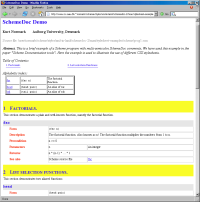
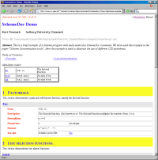

This page shows a gallery of CSS stylesheets for LAML SchemeDoc. You specify the name of the preferred stylesheet (without the extension css) in the css-stylesheet attribute of the SchemeDoc manual-front-matters element. Click at the images to see the SchemeDoc page in full detail.
The pages shown below all use the css-prestylesheet called normal. This is another XML attribute of manual-front-matters element. The css-prestylesheet controls the size of the page (fontsize etc). You can alternatively use small, small-compact, compact, or large.
| argentina.css | |
| brazil.css | |
| dark-green.css | |
| original.css |  |
| original-bordered.css |  |
| fancy.css | |